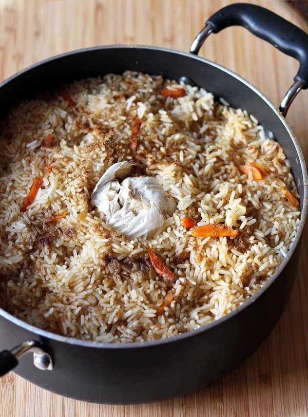

PLOV!

Hungry? Need a lot of food to sit in the fridge and be reheated any time/way? Make Plov.
I like to watch "Life of Boris" videos on YouTube. While a lot of the content is questionable and chaotic, he delivered to me this jewel of slavic tradition that I've made over and over because it is just that good. Oh and it is 100% Gluten Free so it is Morty approved.
Ingredients:
- 2 pounds of any meat. (Beef, Pork, Lamb, Chicken, Fish, whatever as long as it is not ground up...although you could use hamburger if that is all you have)
- 1 large Onion, diced
- 3 large Carrots, sliced
- 1 whole head of Garlic
- 1 pound of Rice (add 15 minutes to the cook time for brown rice)
- Fat ass glog of oil to cover the bottom of a dutch oven (sunflower oil is traditional Slav style, but any cooking oil will work)
- Water (enough)
- Salt, Pepper, Bay Leaves
- Ample Patience and Love
Prep:
- Cut the meat into 1 inch cubes
- Slice the carrots into 1/2 inch thick slices (peel them if you want, but not necessary)
- Dice the onion
- Peel most of the outter skin and Slice off the tip of the garlic bulb just enough to expose the cloves but leave it whole
- Wash the rice in a fine mesh strainer until the water runs clear
Cook:
- Heat the dutch oven on medium-high heat and add enough oil to cover the bottom of the pot
- Add the meat and sear the living hell out of it on all sides.
- Once the meat is seared, add the onions and cook until they are translucent
- Add the carrots and cook for about 5 minutes
- Add the whole garlic bulb to the middle, root side up and add enough water to just make everything float
- Add Salt, Pepper, and Bay Leaves to taste.
- bring to a boil for about 10 minutes then sprinkle the rice on top until you have a nice, even layer
- Using the back of a wooden spoon, poke 3-5 holes in the rice.
- Cover the pot and reduce the heat to low and let it simmer for 20-35 minutes until the rice is tender
- Remove from heat and let it sit for 10 minutes before serving
Makes a LOT of food. You can microwave leftovers, but the pro tip is to oil up a frying pan and treat it like fried rice. Plov is fantastic for it's simple comforting flavors, but you can add/remove spices to suit your preference. You can try Curry Plov, Asian Plov, Indian Plov,or even Spanish Plov. Go simple or go nuts, this is a very forgiving dish.